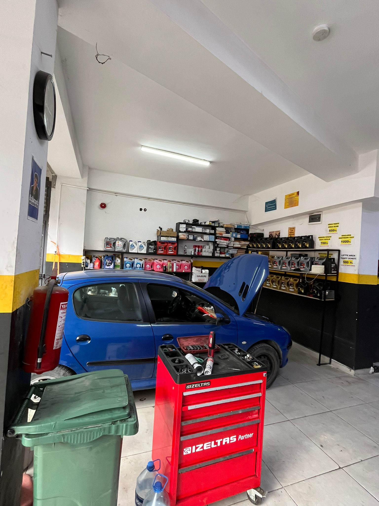
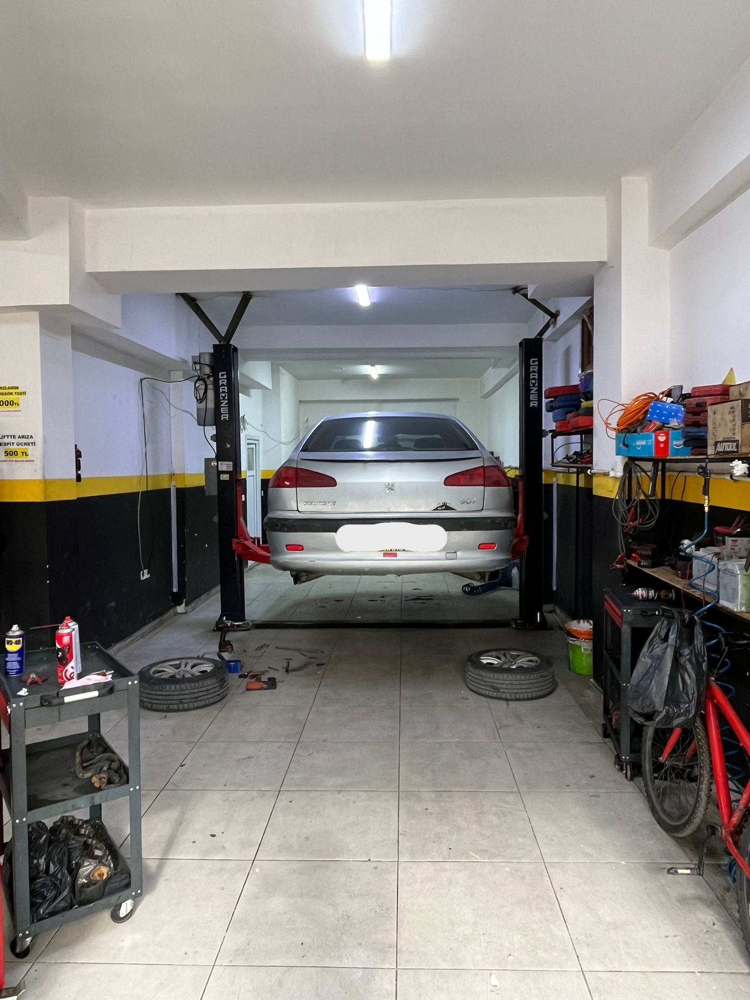
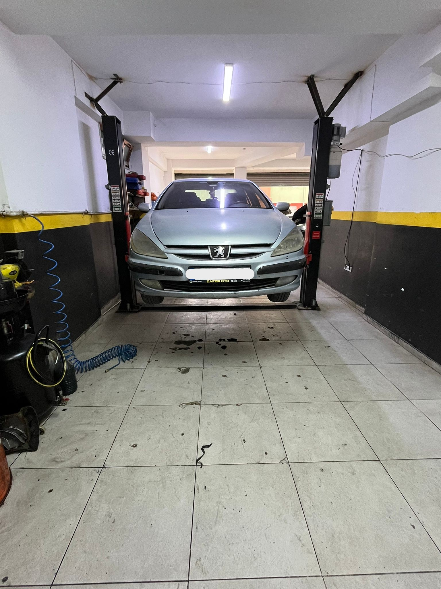
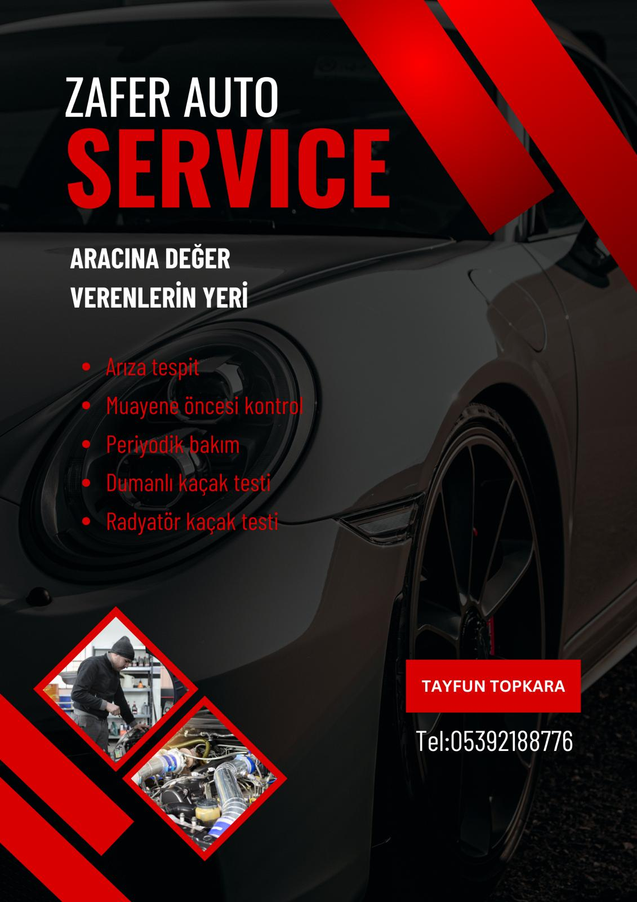

Yağ Değişimi
Yağ Değişimi
Kaliteli yağ ve filtre değişimi ile motor performansı korunur.
Kocaeli Çayırova ve çevresinde hizmet veren Zafer Oto Bakım Onarım Servisi olarak; periyodik bakım, motor kontrolü, fren sistemi, ön takım, arıza tespiti ve tüm oto servis işlemlerinde hızlı, güvenilir ve profesyonel çözümler sunuyoruz.
Kaliteli yağ ve filtre değişimi ile motor performansı korunur.
Süspansiyon ve yürüyen aksam kontrol edilerek sürüş dengesi korunur.
Akü, bağlantılar ve araç elektrik sistemi profesyonel ekipmanlarla kontrol edilir.
Motor bölümü detaylı şekilde incelenir, olası riskler erkenden tespit edilir.
Kaçak noktaları özel cihazlarla net şekilde belirlenir.
Muayene öncesi gerekli kontroller yapılarak eksikler tamamlanır.
Balata, disk ve ilgili fren parçaları kontrol edilerek güvenli duruş desteklenir.
Bilgisayarlı ve mekanik kontrollerle sorunun kaynağı hızlıca belirlenir.
Gerekli işlem sonrası arıza kodları güvenli şekilde silinir.
Soğutma sistemindeki kaçaklar güvenli şekilde tespit edilir.
Araç kullanım ömrünü uzatmak için bakım adımları eksiksiz uygulanır.
Yalnızca manuel araçlar için bakım ve kontrol işlemleri uygulanır.
Motor iç verimi ölçülerek sıkıştırma performansı detaylı incelenir.
Soğutma sıvısı seviyesi ve koruma durumu kontrol edilerek değişim yapılır.
Motor sağlığı için kritik triger sistemi dikkatli şekilde yenilenir.




Müşterilerimizin aracını kendi aracımız gibi görüyor; bakım, kontrol ve onarım süreçlerini açık, anlaşılır ve güven veren bir sistemle yürütüyoruz.
Bize telefon, WhatsApp veya Instagram üzerinden hızlıca ulaşabilirsiniz.